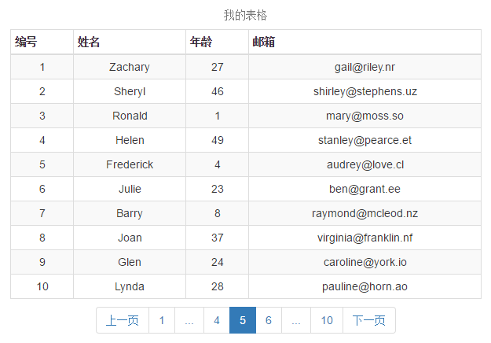

jQuery-xjzPagination | 分页插件
版本&下载:
download v1.1: https://xujunzhou.github.io/jquery-xjzPagination/
author: 徐俊洲
QQ:765550360
time: 2016-09-08
特点:
- 动态分页
- 静态分页
- 自定义页面类型
- 省略页面[...]
- 配置简单
基本:

<head>
<script src="../plugins/jquery-xjzPagination/dist/jquery.xjzPagination_v1.1.js"></script>
</head>
<table class="table table-striped table-bordered table-hover table-condensed">
<caption>我的表格</caption>
<thead>
<tr>
<th>编号</th>
<th>姓名</th>
<th>年龄</th>
<th>电话</th>
</tr>
</thead>
<tbody></tbody>
<script type="text/html" id="table_temp">
{{each rows}}
<tr>
<td>{{$value.id}}</td>
<td>{{$value.name}}</td>
<td>{{$value.age}}</td>
<td>{{$value.phone}}</td>
</tr>
{{/each}}
</script>
</table>
<ul id="xjzPagination" class="pagination"></ul>
<script>
//初始化分页控件
var pagin = $("#xjzPagination").xjzPagination({
onPageClick: function (currentPage) {
loadData(currentPage);
}
});
//加载数据方法
function loadData(currentPage) {
var limit = 10,
start = (currentPage - 1) * limit;
$.get('../js/test.json', { start: start, limit: limit }, function (data) {
if (+data.result_status) {
//渲染模板
$("#table_temp").prev().html(template("table_temp", data)); //artTemplate.js
//更新分页
var totalPages = Math.ceil(data.total / limit); //上舍
pagin.update(totalPages); //$("#xjzPagination").data("xjzPagination").update(totalPages);
}
}, 'json');
}
</script>
配置:
| 配置项 |
默认值 |
说明 |
示例 |
| totalPages |
null |
静态分页(固定总页数), 若配置了该项, 将不需要调用update()去更新分页 |
totalPages:20 |
| visiblePages |
7 |
可视页面, 为了保持左右对称建议设置为奇数值 |
visiblePages:15 |
| startPage |
1 |
起始页面, 静态分页的起始页.若initiateStartPageClick=true, 则初始化时在该页面上触发点击事件
|
|
| initiateStartPageClick |
true |
初始化时在startPage触发点击事件 |
|
| pagingType |
'simple_numbers' |
分页类型:
'full_numbers': 显示所有
'simple_numbers': 上一页[1]下一页
'full': 首页 上一页 下一页 尾页
'simple': 上一页 下一页
'numbers': 纯数字[1][2]...
|
|
| ellipsis |
true |
是否在分页列表显示[...] |
|
| first |
'首页' |
首页按钮显示的文本 |
|
| prev |
'上一页' |
上一页按钮显示的文本 |
|
| next |
'下一页' |
下一页按钮显示的文本 |
|
| last |
'尾页' |
尾页按钮显示的文本 |
|
| more |
'...' |
省略页面按钮上显示的文本 |
|
| firstClass |
'first' |
首页按钮的css类, 如果需要添加多个类请用空格分隔 |
'first btn' |
| prevClass |
'prev' |
上一页按钮的css类 |
|
| nextClass |
'next' |
下一页按钮的css类 |
|
| lastClass |
'last' |
尾页按钮的css类 |
|
| pageClass |
'page' |
页面按钮的css类 |
|
| moreClass |
'more' |
省略按钮的css类 |
|
| activeClass |
'active' |
当前页的css类 |
|
| disabledClass |
'disabled' |
禁用按钮的css类 |
|
| onPageClick(currentPage) |
[必须] |
页面点击回调函数, 函数内部this指向分页控件$ul, 参数currentPage为要加载的页面 |
|
方法:
获取控件实例:
(1) 初始化控件时的返回值
(2) 通过在$ul.data("xjzPagination")
1. update(totalPages) 更新分页
如果不是静态分页, 应该在页面单击的回调函数中, 调用该方法来更新分页的数量. 需要传入当前总页数的上舍值
Demo
Bootstrap: